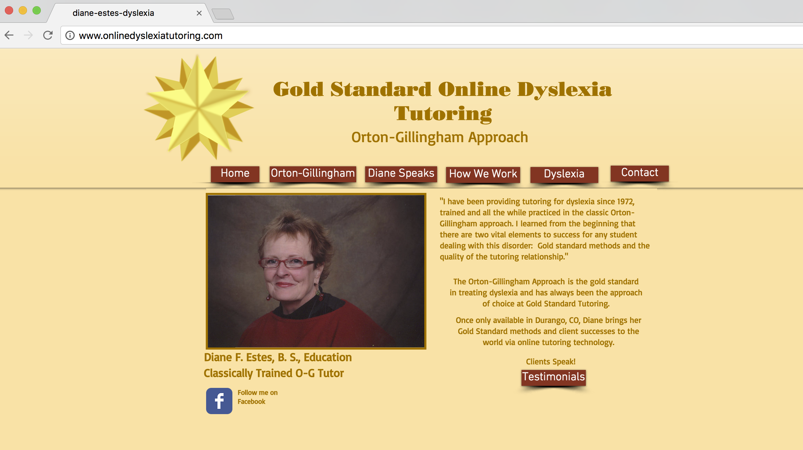

This is a before and after project. The development process also involves design and as time passes websites need to be updated to continue to provide quality service to your clients. Below is the before image. The previous website used tables, drop shadows and was non responsive

To give this website a quick makeover it was converted to a single page site. Each section covers the main components of their service and the use of icons is incorporated to transmit the information in a quicker way.